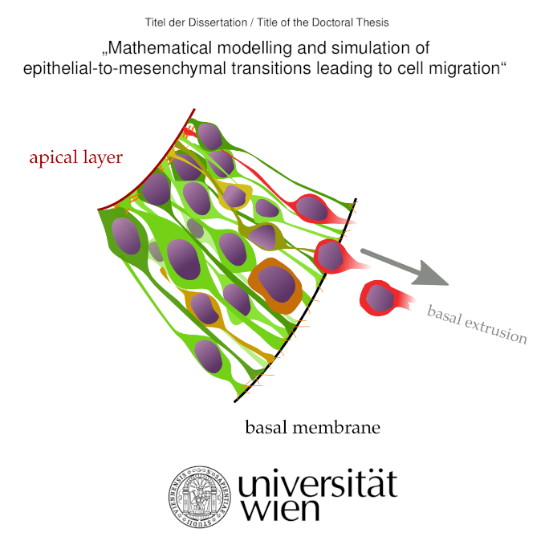
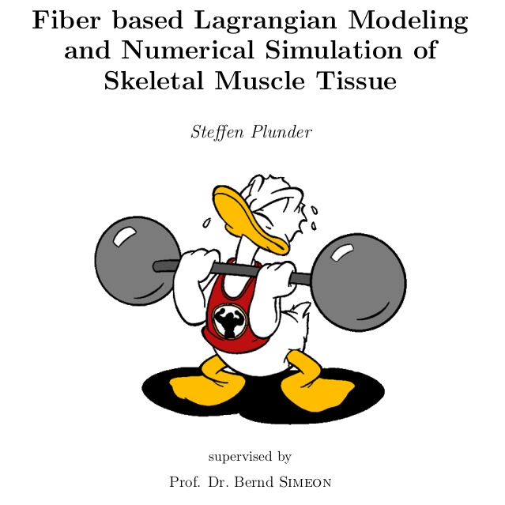
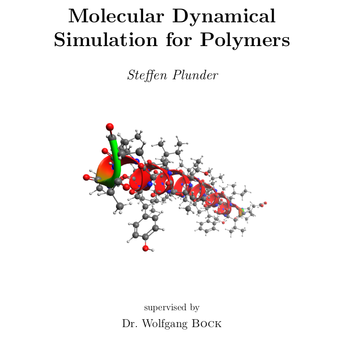

R. Tsutsumi, A. Diez, S. Plunder, R. Kimura, S. Oki, K. Takizawa, H. Akiyama, Y. Mii, R. Takada, S. Takada, Mototsugu Eiraku, Self-organized fingering instabilities drive the emergence of tissue morphogenesis in digit organoids. (2025) bioRxiv
S. Plunder, S. Merino-Aceituno, Convergence proof for first-order position-based dynamics: An efficient scheme for inequality constrained ODEs. (2023) arxiv
P. C. Guruciaga, T. Ichikawa, S. Plunder, T. Hiiragi, A. Erzberger, Boundary geometry controls a topological defect transition that determines lumen nucleation in embryonic development Nature Materials [accepted] (2026) arxiv
T. Ichikawa, P. C. Guruciaga, S. Hu, S. Plunder, M. Makino, M. Hamaji, A. Stokkermans, S. Yoshida, A. Erzberger, T. Hiiragi, Boundary-guided cell alignment drives mouse epiblast maturation. Nature Physics [accepted] (2026) bioRxiv
M. Mira Osuna, S. Plunder, E. Theveneau, Roland Le Borgne, The directionality of collective cell delamination is governed by tissue architecture and cell adhesion in a Drosophila carcinoma model. iScience (2025) DOI: 10.1016/j.isci.2025.113663
S. Merino-Aceituno, S. Plunder, C. Wytrzens, H. Yoldaş, Macroscopic effects of an anisotropic Gaussian-type repulsive potential: nematic alignment and spatial effects. Mathematical Models and Methods in Applied Sciences (2025) DOI:10.1142/S0218202525500356, arxiv
H. Jäger, É. Grosjean, S. Plunder, C. Redenbach, A. Keilmann, B. Simeon, C. Surulescu, Cell seeding dynamics in a porous scaffold material designed for meniscus tissue regeneration. Proceedings in Applied Mathematics & Mechanics (2024) DOI: 10.1002/pamm.202400133
E. Despin-Guitard, V. S. Rosa, S. Plunder, N. Mathiah, K. Van Schoor, E. Nehme, S. Merino-Aceituno, J. Egea, M. N. Shahbazi, E. Theveneau, I. Migeotte, Non-apical mitoses contribute to cell delamination during mouse gastrulation. Nature Communications (2024) DOI:10.1038/s41467-024-51638-6
S. Plunder, C. Danesin, B. Glise, M. A. Ferreira, S. Merino-Aceituno, E. Theveneau, Modelling variability and heterogeneity of EMT scenarios highlights nuclear positioning and protrusions as main drivers of extrusion. Nature Communications (2024) DOI:10.1038/s41467-024-51372-z
S. Plunder, M. Burkard, T. Helling, U. M. Lauer, L. E. Hoelzle, L. Marongiu, Determination of optimal phage load and administration time for antibacterial treatment. Current Protocols (2024) DOI:10.1002/cpz1.954
S. Plunder, B. Simeon, The mean-field limit for particle systems with uniform full-rank constraints. Kinetic and Related Models (2023) DOI:10.3934/krm.2023012, arxiv
S. Plunder, M. Burkard, U. Lauer, S. Venturelli, L. Marongiu, Determination of phage load and administration time in simulated occurrences of antibacterial treatments. Frontiers of Medicine (2022) DOI: 10.3389/fmed.2022.1040457
S. Plunder, B. Simeon, Coupled Systems of Linear Differential-Algebraic and Kinetic Equations with Application to the Mathematical Modelling of Muscle Tissue. In: Reis, T., Grundel, S., Schöps, S. (eds) Progress in Differential-Algebraic Equations II. Differential-Algebraic Equations Forum. Springer (2020) DOI: 10.1007/978-3-030-53905-4_12, arxiv

PhD thesis on Mathematical modelling and simulation of epithelial-to-mesenchymal transitions leading to cell migration (supervisor Prof. Sara Merino-Aceituno).
Master's thesis on modelling and simulation of skeletal muscle tissue (supervisor Prof. Bernd Simeon).
Bachelor's thesis on molecular dynamics (supervisor Dr. Wolfgang Bock).